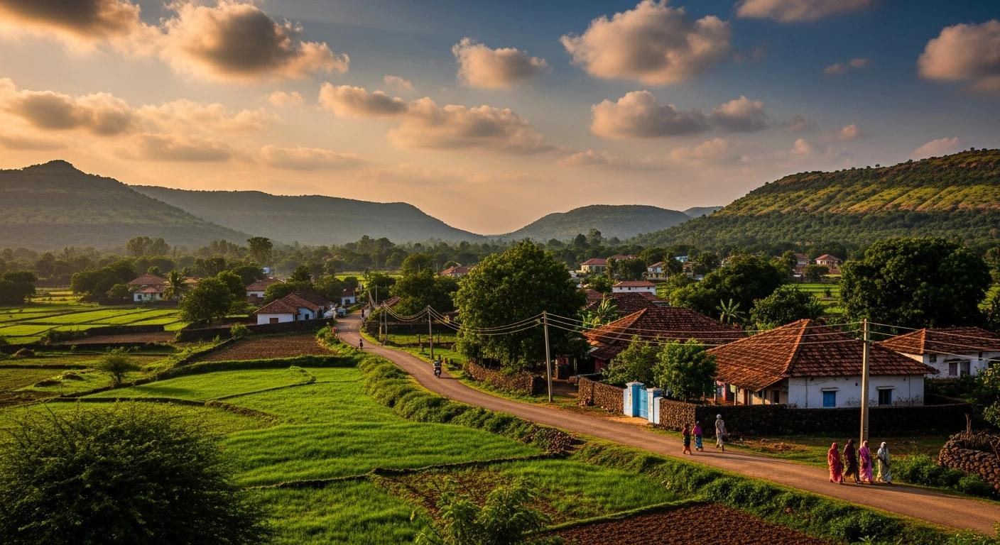
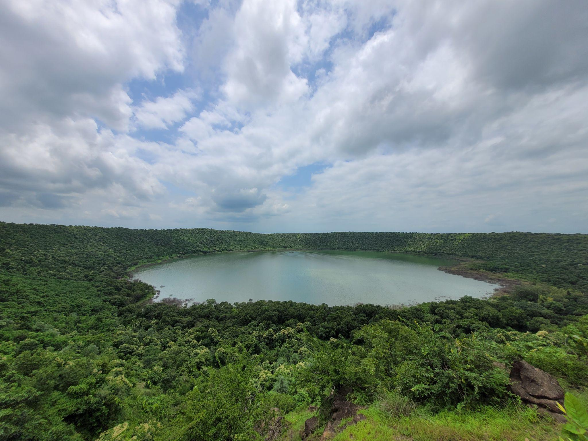
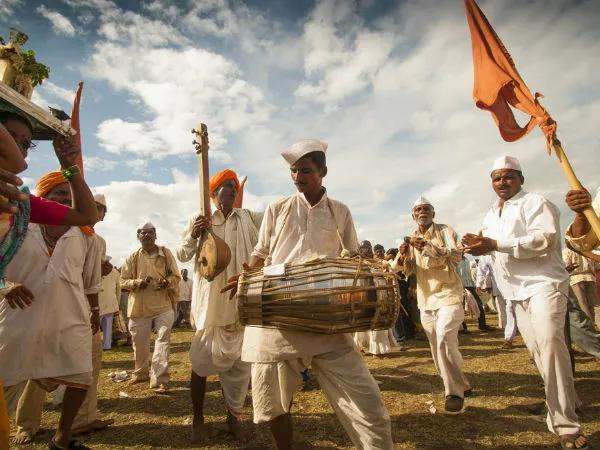
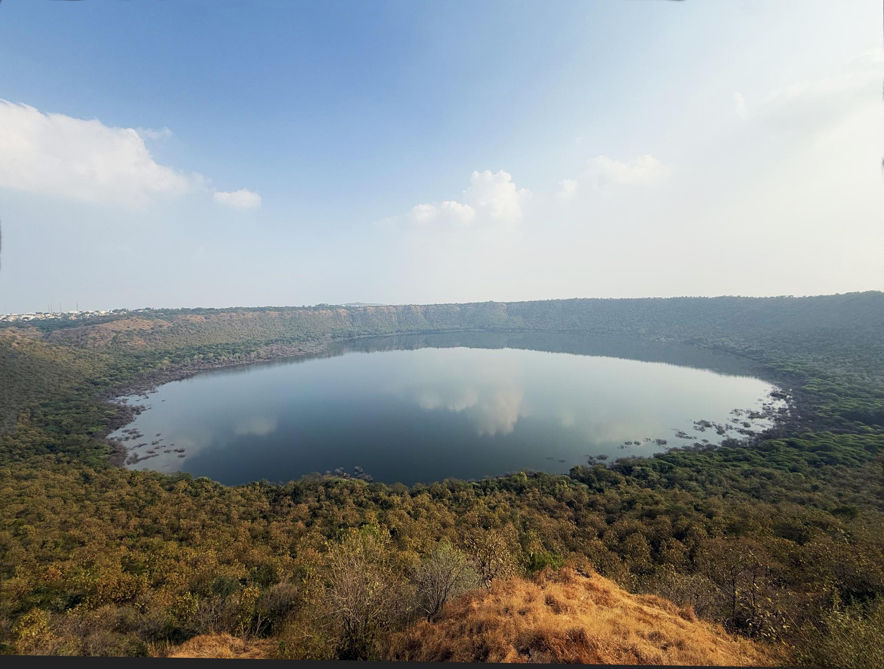
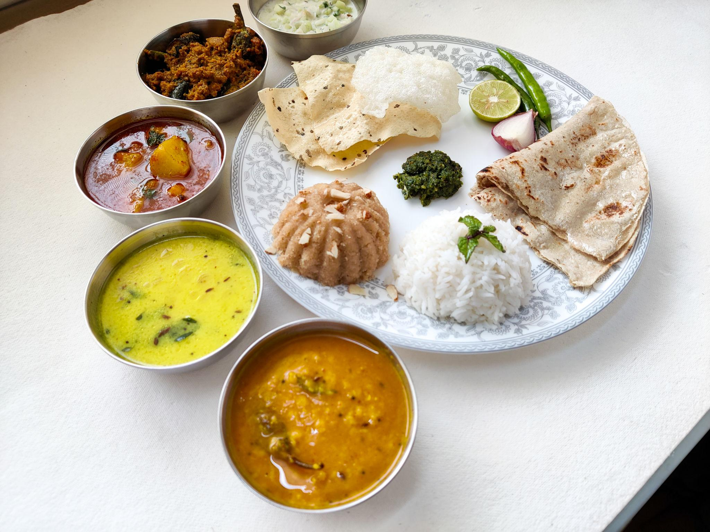
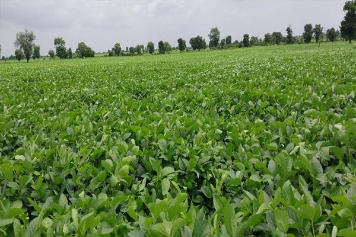
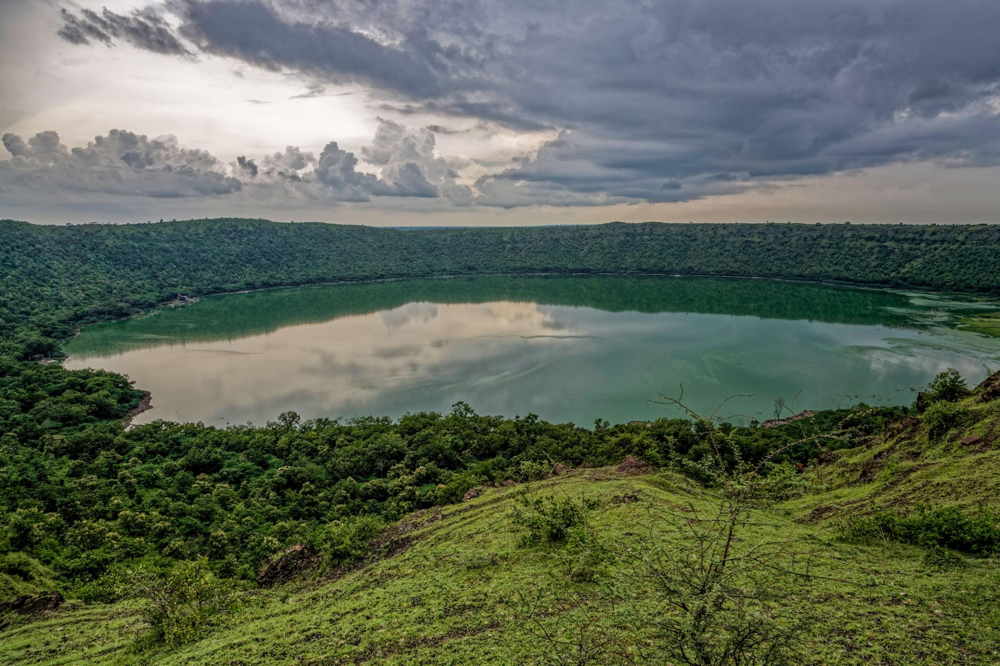
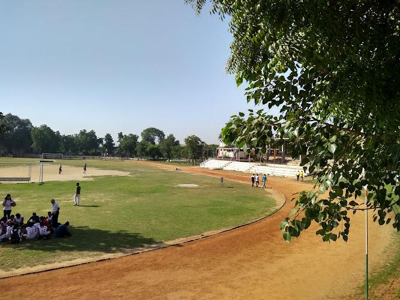

About

Buldhana is a prominent administrative and cultural headquarters situated in the Amravati division of Maharashtra. Sitting at an elevation of over 2,100 feet on the Buldhana-Yeotmal plateau, the region enjoys a considerably cooler and more pleasant climate compared to the rest of the Berar plains.
- Location:Buldhana is situated in the western part of the Vidarbha region in Maharashtra, India.
- Famous as:It is world-renowned for the Lonar Crater (a massive meteorite-impact lake) and the holy Shegaon Temple.
History

The history of Buldhana is intricately tied to the Maratha Empire and medieval dynasties. It features remarkable medieval fortifications, including the extensive ruins at Sindkhed Raja—the historic birthplace of Rajmata Jijabai, the mother of Chhatrapati Shivaji Maharaj. The area also hosts historical remnants like the Malegaon Fort and ancient medieval sites connected to the Jadhav dynasty.
- Buldhana's history began with the ancient Bhil tribe and the legendary Vidarbha Kingdom. It was ruled by powerful empires, including the Mauryas, Yadavas, Mughals, and the Nizam. The region is famous as the birthplace of Rajmata Jijabai, the mother of Chhatrapati Shivaji Maharaj. The British took control in 1853, and Buldhana joined Maharashtra in 1960.
Culture

The district boasts a dynamic, multi-religious society where Marathi is the primary language, alongside Hindi, Urdu, and regional dialects. Locals celebrate vibrant festivals such as Diwali, Eid, and Ganesh Chaturthi, heavily influenced by the rich socio-cultural heritage passed down by Maratha warriors and local saints.
- Main Festivals:People celebrate Ganesh Chaturthi, Diwali, Eid, and the grand Shegaon Palki festival.
- Traditional Arts:The region features beautiful Warli painting, traditional Maratha crafts, and energetic Gondhal folk music.
- Language:Marathi is the main spoken language, along with Hindi and local Varhadi dialects.
Tourism

Buldhana is a major destination for religious, heritage, and geological tourism. Major landmarks include the world-famous Lonar Crater, a national geo-heritage monument, and the highly revered Shri Gajanan Maharaj Temple in Shegaon. Other key attractions include the Dnyanganga Wildlife Sanctuary and the magnificent Anand Sagar spiritual park.
- Lonar Crater Lake: A unique, massive saltwater lake created by a meteorite hit thousands of years ago.
- Gajanan Maharaj Temple: A highly revered spiritual center and temple complex located in Shegaon.
- Sindkhed Raja: The historic birthplace of Rajmata Jijabai, featuring beautiful palaces and monuments.
Famous Food

The local cuisine features authentic, rustic Maharashtrian flavors. Popular staple dishes include Pithla Bhakri (gram flour curry with jowar or bajra flatbread), spicy Sev Bhaji, and Varhadi Usal. Sweet treats like Puran Poli and regional snacks like Khamgaon Bhadang (a spicy puffed rice mixture) are local favorites.
- Famous Food:Spicy Sev Bhaji served with hot Pithla Bhakri (a thick gram flour curry and jowar flatbread).
- Local Specialty:Khamgaon Bhadang, a crispy and very spicy puffed rice snack that people love to take home.
Economy

The economy is primarily agrarian, with the fertile lands surrounding towns like Khamgaon producing cash crops like cotton, wheat, peanuts, and sorghum. Local commerce, handloom weaving, small-scale manufacturing, and a growing tourism and hospitality sector provide significant supplementary employment to the district's residents.
- Key Industries:Major businesses include cotton ginning, oil seed pressing, textile weaving, and dynamic local tourism.
- Main Crops:Farmers primarily grow cotton, soybeans, jowar (sorghum), and pulses like pigeon peas.
Environment

The district is blessed with diverse and protected ecological zones, notably the Dnyanganga Wildlife Sanctuary and the Ambabarwa Sanctuary nestled in the Satpura hills. These areas host varied wildlife, including leopards, barking deer, and numerous bird species, promoting eco-tourism and environmental conservation.
- Climate:The district features a tropical climate with very hot summers, rainy monsoons, and mild, pleasant winters.
- Key Rivers:The major water bodies flowing through the region are the Purna River and the Penganga River.
- Protected Areas:It houses the Dnyanganga Wildlife Sanctuary and the scenic Ambabarwa Sanctuary in the hills.
Sports

Traditional Indian sports remain deeply rooted in Buldhana, with rural wrestling (Kushti) and kabaddi being highly popular among the youth. The district regularly hosts local tournaments for these disciplines, while modern sports like cricket and athletics are increasingly promoted in local schools and universities.
- Traditional Sports:Local youth love playing Kushti (mud wrestling), Kabaddi, and Kho-Kho.
- Focus:Schools and clubs actively promote fitness, rural sports meets, and training for cricket and athletics.